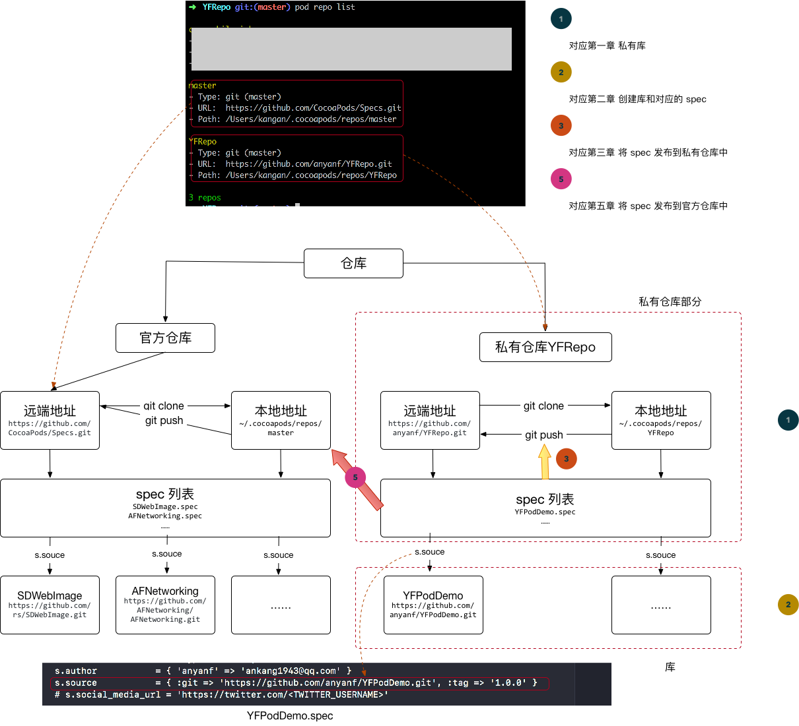

本文说明制作Cocoapod私有库的过程。本文涉及到两个仓库 ‘官方仓库’、’私有仓库’。
- 官方仓库的作用代表 CocoaPods的 官方 podspec 存放地址。 具体可以参考:CocoaPods官方源、Specs;
- 私有仓库的是私有 podspec 存放地址。在 git 中仓库名称是 YFRepo ，clone 到本地的别名也叫 YFRepo-master。后文中私有仓库–YFRepo指的 git 地址，YFRepo-master 指的是 clone 到本地的名称。
创建私有仓库
仓库（Spec Repo）是所有的 Pods 的一个索引，是所有公开\私有 Pods 的 podspec 文件仓库，其实就是一个部署在服务器的 Git 仓库，当你使用 CocoaPods 后它会被 Clone 到本地的 ~/.cocoapods/repos 目录下。
首先在 git 上创建一个私有远端仓库 YFRepo，步骤如下：
- 在 GitHub 上创建私有仓库 YFRepo，空的就可以。
- 将私有仓库 YFRepo 添加到 cocoapod 中，远端私有仓库 YFRepo 在本地中的别名是YFRepo-master，这样以后操作 YFRepo-master 就相当于操作YFRepo， 命令如下：
pod repo add 'YFRepo-master' 'https://github.com/anyanf/YFRepo.git'
注意：这个Git 仓库地址要换成你自己的创建的 Specs git 地址！！！ 成功后会在 ~/.cocoapods/repos 目录下就能看到 YFRepo-master 了，至此，第一步就完成了创建私有仓库。
创建完成后，查看 ~/.cocoapods/repos 目录的变化：
# cd 到~/.cocoapods/repos 目录
cd ~/.cocoapods/repos
# 查看目录结构
tree -L 3
大概的文件目录如下:
.
├── YFRepo-master
│ └── README.md
└── master
├── CocoaPods-version.yml
├── README.md
└── Specs
├── 0
├── 1
├── 2
其中 master 就是官方的 Sepc Repo,跟 master 同目录级别的 YFRepo-master 目录就是我自己创建的私有 Sepc Repo，目前 YFRepo-master下面是空的。
也可以使用 pod repo list 命令查看仓库信息，结果如下：
repos pod repo list
master
- Type: git (master)
- URL: https://github.com/CocoaPods/Specs.git
- Path: /Users/kangan/.cocoapods/repos/master
YFRepo-master
- Type: git (master)
- URL: https://github.com/anyanf/YFRepo.git
- Path: /Users/kangan/.cocoapods/repos/YFRepo-master
2 repos
小结
上面讲解了私有仓库的创建方法。创建完成后，从两个方面描述私有仓库，进一步认识私有创库：文件目录、pod 命令。
创建 YFPodDemo 库
- 创建 YFPodDemo 库： 首先，在Git上创建一个YFYFPodDemo仓库,当然你也是可以在公司内网创建的。 创建方法使用Cocoapods提供的一个Using Pod Lib Create 工具，注意提前 cd 到你想要创建库的路径。
#pod lib create [项目名]
pod lib create YFPodDemo
该命令会在当前目录创建 YFPodDemo 项目，接着在 Terminal 控制台会输出：
Cloning `https://github.com/CocoaPods/pod-template.git` into `YFPodDemo`.
Configuring YFPodDemo template.
------------------------------
To get you started we need to ask a few questions, this should only take a minute.
2018-04-18 19:53:58.341 defaults[47928:27982286]
The domain/default pair of (org.cocoapods.pod-template, HasRunbefore) does not exist
If this is your first time we recommend running through with the guide:
- http://guides.cocoapods.org/making/using-pod-lib-create.html
( hold cmd and click links to open in a browser. )
Press return to continue.
选择回车按钮，接着会出现一系列的问题：
What platform do you want to use?? [ iOS / macOS ]
> iOS
What language do you want to use?? [ Swift / ObjC ]
> ObjC
Would you like to include a demo application with your library? [ Yes / No ]
> Yes
Which testing frameworks will you use? [ Specta / Kiwi / None ]
> Specta
Would you like to do view based testing? [ Yes / No ]
> Yes
What is your class prefix?
> YF
Running pod install on your new library.
Analyzing dependencies
Fetching podspec for `YFPodDemo` from `../`
Downloading dependencies
Installing Expecta (1.0.6)
Installing Expecta+Snapshots (3.1.1)
Installing FBSnapshotTestCase (2.1.4)
Installing Specta (1.0.6)
Installing YFPodDemo (0.1.0)
Generating Pods project
Integrating client project
[!] Please close any current Xcode sessions and use `YFPodDemo.xcworkspace` for this project from now on.
Sending stats
Pod installation complete! There are 5 dependencies from the Podfile and 5 total pods installed.
[!] Automatically assigning platform ios with version 9.3 on target YFPodDemo_Example because no platform was specified. Please specify a platform for this target in your Podfile. See `https://guides.cocoapods.org/syntax/podfile.html#platform`.
Ace! you're ready to go!
We will start you off by opening your project in Xcode
open 'YFPodDemo/Example/YFPodDemo.xcworkspace'
To learn more about the template see `https://github.com/CocoaPods/pod-template.git`.
To learn more about creating a new pod, see `http://guides.cocoapods.org/making/making-a-cocoapod`.
回答完问题后，会创建出YFPodDemo项目。结构如下：
.
├── Example
│ ├── Podfile
│ ├── Podfile.lock
│ ├── Pods
│ │ ├── Expecta
│ │ ├── Expecta+Snapshots
│ │ ├── FBSnapshotTestCase
│ │ ├── Headers
│ │ ├── Local\ Podspecs
│ │ ├── Manifest.lock
│ │ ├── Pods.xcodeproj
│ │ ├── Specta
│ │ └── Target\ Support\ Files
│ ├── Tests
│ │ ├── Tests-Info.plist
│ │ ├── Tests-Prefix.pch
│ │ ├── Tests.m
│ │ └── en.lproj
│ ├── YFPodDemo
│ │ ├── Base.lproj
│ │ ├── Images.xcassets
│ │ ├── YFAppDelegate.h
│ │ ├── YFAppDelegate.m
│ │ ├── YFPodDemo-Info.plist
│ │ ├── YFPodDemo-Prefix.pch
│ │ ├── YFViewController.h
│ │ ├── YFViewController.m
│ │ ├── en.lproj
│ │ └── main.m
│ ├── YFPodDemo.xcodeproj
│ │ ├── project.pbxproj
│ │ ├── project.xcworkspace
│ │ └── xcshareddata
│ └── YFPodDemo.xcworkspace
│ ├── contents.xcworkspacedata
│ ├── xcshareddata
│ └── xcuserdata
├── LICENSE
├── README.md
├── YFPodDemo
│ ├── Assets
│ └── Classes
│ └── ReplaceMe.m
├── YFPodDemo.podspec
└── _Pods.xcodeproj -> Example/Pods/Pods.xcodeproj
2.添加实现代码
├── YFPodDemo
│ ├── Assets
│ └── Classes
│ ├── YFLog.h
│ └── YFLog.m
在本教程中我在上面的 Classes 文件目录添加了 YFLog.[h、m] 两个文件。
3.开发模式下测试 pod 库的代码 打开 Example 工程目录 Podfile 文件：
pod 'YFPodDemo', :path => '../' # 指定路径
#pod 'YFPodDemo', :podspec => '../YFPodDemo.podspec' # 指定podspec文件
然后在 Example 工程目录下执行 pod install 命令安装依赖，打开项目工程，可以看到库文件都被加载到 Pods 子项目中了，不过它们并没有在 Pods 目录下，而是跟测试项目一样存在于 Development Pods/YFPodDemo 中，这是因为我们是在本地测试，而没有把 podspec 文件添加到 Spec Repo 中的缘故。测试库文件没有问题,接着我们需要执行第4步。
4.提交 YFPodDemo 到 git上。 在 Terminal 中执行以下命令：
git add .
git commit -m '1.0.0'
git remote add origin https://github.com/anyanf/YFPodDemo.git
git push origin master #提交到远端仓库
git tag -m "v1.0.0" "v1.0.0" #打上标签，这个很重要
git push --tags #推送tag到远端仓库
到这里，成功提交到远程仓库— YFPodDemo ，以后就可以使用 git 上的 YFPodDemo 库了。
创建并提交 YFPodDemo 库的 podspec 文件到私有仓库 YFRepo-master
1.配置 YFPodDemo 库的 podspec 文件
#
# Be sure to run `pod lib lint YFPodDemo.podspec' to ensure this is a
# valid spec before submitting.
#
# Any lines starting with a # are optional, but their use is encouraged
# To learn more about a Podspec see http://guides.cocoapods.org/syntax/podspec.html
#
Pod::Spec.new do |s|
s.name = 'YFPodDemo'
s.version = '1.0.0'
s.summary = 'A short description of YFPodDemo.'
# This description is used to generate tags and improve search results.
# * Think: What does it do? Why did you write it? What is the focus?
# * Try to keep it short, snappy and to the point.
# * Write the description between the DESC delimiters below.
# * Finally, don't worry about the indent, CocoaPods strips it!
s.description = <<-DESC TODO: Add long description of the pod here. DESC s.homepage = 'https://github.com/anyanf/YFPodDemo' # s.screenshots = 'www.example.com/screenshots_1', 'www.example.com/screenshots_2' s.license = { :type => 'MIT', :file => 'LICENSE' }
s.author = { 'anyanf' => 'ankang1943@qq.com' }
s.source = { :git => 'https://github.com/anyanf/YFPodDemo.git', :tag => '1.0.0' }
# s.social_media_url = 'https://twitter.com/'
s.ios.deployment_target = '8.0'
s.source_files = 'YFPodDemo/Classes/**/*'
# s.resource_bundles = {
# 'YFPodDemo' => ['YFPodDemo/Assets/*.png']
# }
# s.public_header_files = 'Pod/Classes/**/*.h'
# s.frameworks = 'UIKit', 'MapKit'
# s.dependency 'AFNetworking', '~> 2.3'
end
podspec 更多配置请参考:官方文档
2.验证 YFPodDemo.podspec
编辑完 YFPodDemo.podspec 文件后，需要验证一下这个 YFPodDemo.podspec 文件是否可用 ,在 Terminal 中执行 cd 进入 YFPodDemo.podspec 项目根目录然后，执行以下命令(后面添加 --verbose 参数可以获取详情)：
pod spec lint --allow-warnings
#有用的命令选项
--allow-warnings 允许警告存在
--subspec=NAME 只验证指定的 子spec
--fail-fast 第一次失败就停止 libraries 库
--use-libraries 验证时，pod自动加载系统
--sources=https://github.com/artsy/Specs,master 指定私有 spec 库 ,如果要提交的库里依赖别的私有仓库中的库，需要指定
--verbose 显示编译详细日志
--help 查看帮助
当你看到 Terminal 中输出：
-> YFPodDemo (1.0.0)
- WARN | summary: The summary is not meaningful.
Analyzed 1 podspec.
YFPodDemo.podspec passed validation.
表示这个 YFPodDemo.podspec 验证通过，是一个符合 CocoaPods 规则的配置文件。
3.本地测试 YFPodDemo.podspec 文件
打开Example工程目录Podfile文件修改下pod 的引用
#pod 'YFPodDemo', :path => '../' # 指定路径
pod 'YFPodDemo', :podspec => '../YFPodDemo.podspec' # 指定podspec文件
#有用的命令选项
--allow-warnings 允许警告存在
--use-libraries 验证时，pod自动加载系统
--sources=https://github.com/artsy/Specs,master 依赖的其它源
--local-only 只推送到本地，不推送到远程
--commit-message="Fix bug in pod" 注释
--use-json 源中使用 JSON 格式保存
--verbose 显示详细信息
--help 帮助
然后在 Example 工程目录下执行 pod install 命令安装依赖，打开项目工程，现在可以看到库文件都被加载到 Pods 子项目中了。
4.向 Spec Repo 提交 podspec
测试库文件没有问题我们就把 YFPodDemo.podspec 提交到远程 Spec Repo 仓库中，就是本文开头说的官方仓库或者私有仓库，在 Terminal中 执行 cd 进入 YFPodDemo 项目根目录然后，执行以下命令：
# pod repo push [Repo名] [podspec 文件名字]
pod repo push YFRepo-master ./YFPodDemo.podspec --allow-warnings
如果提交成功，在Terminal会输出:
Validating spec
-> YFPodDemo (1.0.0)
- WARN | summary: The summary is not meaningful.
Updating the `YFRepo-master' repo
Already up to date.
Adding the spec to the `YFRepo-master' repo
- [Add] YFPodDemo (1.0.0)
Pushing the `YFRepo-master' repo
表示提交成功了！这个组件库就添加到我们的私有 Spec Repo 中了，可以进入到 ~/.cocoapods/repos/YFRepo-master 目录下查看
cd ~/.cocoapods/repos/
tree -L 3 YFRepo-master/
结果如下：
YFRepo-master/
├── README.md
└── YFPodDemo
└── 1.0.0
└── YFPodDemo.podspec
2 directories, 2 files
使用制作好的Pod
在完成这一系列步骤之后，我们就可以在正式项目中使用这个私有的 Pod 了只需要在项目的 Podfile 里增加以下一行代码即可, 在正式项目的 Podfile 里添加私有 Spec Repo。
#私有Spec Repo
source 'https://github.com/anyanf/YFRepo.git'
source 'git@github.com:CocoaPods/Specs.git'
pod 'YFPodDemo', '~> 1.0.0'
然后执行 pod install，安装依赖，然后打开项目可以看到，我们自己的库文件已经出现在 Pods 子项目中的 Pods 子目录下了，而不再是 Development Pods。
将YFPodDemo发布到官方仓库中
注册CocoaPods
首先使用 pod trunk me 查看自己是否注册过：如果有下面类似的内容输出,则表示没有注册过。
[!] You need to register a session first.
Usage:
$ pod trunk me COMMAND
Includes information about your registration, followed by all your
sessions.
These are your current session, other valid sessions, unverified sessions,
and expired sessions.
Commands:
+ clean-sessions Remove sessions
Options:
--silent Show nothing
--verbose Show more debugging information
--no-ansi Show output without ANSI codes
--help Show help banner of specified command
使用 pod trunk register 命令注册。
pod trunk register ankang1943@qq.com 'anyanf' --verbose
注册完成后，使用下面的命令，将 YFPodDemo 库的 spec 推送到官方仓库中。
pod trunk push --allow-warnings
推送完成后，可以使用pod search 查看。
Tip
pod 的命令如果不知道怎么用，可以使用 pod –help 命令查看使用方法：
pod --help
Usage:
$ pod COMMAND
CocoaPods, the Cocoa library package manager.
Commands:
+ cache Manipulate the CocoaPods cache
+ deintegrate Deintegrate CocoaPods from your project
+ env Display pod environment
+ init Generate a Podfile for the current directory
+ install Install project dependencies according to versions from a
Podfile.lock
+ ipc Inter-process communication
+ lib Develop pods
+ list List pods
+ outdated Show outdated project dependencies
+ plugins Show available CocoaPods plugins
+ repo Manage spec-repositories
+ search Search for pods
+ setup Setup the CocoaPods environment
+ spec Manage pod specs
+ trunk Interact with the CocoaPods API (e.g. publishing new specs)
+ try Try a Pod!
+ update Update outdated project dependencies and create new
Podfile.lock
Options:
--silent Show nothing
--version Show the version of the tool
--verbose Show more debugging information
--no-ansi Show output without ANSI codes
--help Show help banner of specified command
通过上面可以看到 pod 的所有命令。常用的有 pod init、pod install、 pod update、pod lib、pod repo 等等，如果对 pod repo 不了解，可以使用 pod repo –-help 进一步查看使用方法。
pod repo --help
Usage:
$ pod repo [COMMAND]
Manage spec-repositories
Commands:
+ add Add a spec repo
+ lint Validates all specs in a repo
> list List repos
+ push Push new specifications to a spec-repo
+ remove Remove a spec repo
+ update Update a spec repo
Options:
--silent Show nothing
--verbose Show more debugging information
--no-ansi Show output without ANSI codes
--help Show help banner of specified command
可以看出，pod repo add 、pod repo list 等命令，如果对 pod repo list 命令不知道如何使用，可以使用 pod repo list –help 命令进一步查看使用方法
pod repo list --help
Usage:
$ pod repo list
List the repos from the local spec-repos directory at
`~/.cocoapods/repos/.`
Options:
--count-only Show the total number of repos
--silent Show nothing
--verbose Show more debugging information
--no-ansi Show output without ANSI codes
--help Show help banner of specified command
上面的方法对任何的 pod 命令都使用，通过上面的方法我们可以学习会 pod 命令的使用方法。
遇到的问题解决方案
pod repo push 的时候可能会遇到下面这样的错误：
[!] The repo `MySpecs` at `../../../.cocoapods/repos/YFRepo-master` is not clean
执行如下命令即可：
cd ~/.cocoapods/repos/YFRepo-master，git clean -f
参考资料：创建私有仓库
如何在私有组件中包含*.xcassets，使用图片
将.xcassets文件放至目录/Assets/*.xcassets下。
需要在*.podspec文件中加入如下代码：
s.resource_bundle = {
'boudle名' => ['私有库名/Assets/*.xcassets'] #boudle名下面要用
}
在需要引入*.xcassets中的图片资源时，调用如下方法：
UIImage *img = [self getImageWithBoudleName:@"boudle名" imgName:@"图片名称"];
- (UIImage *)getImageWithBoudleName:(NSString *)boudleName imgName:(NSString *)imgName {
NSURL *bundleURL = [[NSBundle mainBundle] URLForResource:@"Frameworks" withExtension:nil];
bundleURL = [bundleURL URLByAppendingPathComponent:boudleName];
bundleURL = [bundleURL URLByAppendingPathExtension:@"framework"];
bundleURL = [bundleURL URLByAppendingPathComponent:boudleName];
bundleURL = [bundleURL URLByAppendingPathExtension:@"bundle"];
NSBundle *bundle = [NSBundle bundleWithURL:bundleURL];
UIImage *image = [UIImage imageNamed:imgName
inBundle:bundle
compatibleWithTraitCollection:nil];
// NSBundle *bundle = [NSBundle bundleForClass:[self class]];
// NSURL *url = [bundle URLForResource:boudleName withExtension:@"bundle"];
// NSBundle *targetBundle = [NSBundle bundleWithURL:url];
// UIImage *image = [UIImage imageNamed:imgName
// inBundle:targetBundle
// compatibleWithTraitCollection:nil];
return image;
}
关于pod之间的引用问题
private_header_files
善用spec中的private_header_files，可以解决很多引用的问题。
可以将需要导入的第三方头文件单独放到一个.h文件中，然后在pod库中的导入这个.h文件，将该.h 设置私有，尤其是当pod库中含有OC和Swift混编时，该操作极其重要。否则，你可能遇到比如Include of non-modular header inside framework module的错误，该错误就是你在头文件中引用了其他库的头文件，这是不推荐的，建议放到.m中去导入，但是这样就要在每个.m中引用了，如果想方便的话，还是写在一个统一的.h中，然后弄成'private_header_files'。
还有就是如果是动态库的模式（use_frameworks!），在别的类Foo里，只有引用了pod中某个类，那么类Foo会把pod所有的.h都引用到，这样耦合度也是横高的。比如pod中有C++依赖的Bar.h，虽然类Foo并没有引用Bar.h，还是会报错让该类兼容C++。这时候把Bar.h弄成private，就可以不引用这个Bar.h了，从而解决类Foo不用c++的类编译错误。
OC与Swift混编
主工程中的OC文件引用swift文件时使用#import "YourTargetName-Swift.h"来引用，在XCode 10.2.1，Swift 5.0中使用@import YourPodName;，例如：
#import <Foo/Foo-Swift.h>
Xcode 10.2.1，swift 5.0使用：
@import Foo;
而swift引用OC文件时，不需要使用桥接文件，pod会自动生成YourPodName-umbrella.h直接使用即可，例如：
import UIKit
OC项目中使用swift pod
如果在pod库中使用了Swift，那么在主工程中一定要新建一个Swift文件，空白的也可以。否则编译器会报错：
ld: warning: Could not find auto-linked library 'swiftCoreGraphics'
ld: warning: Could not find auto-linked library 'swiftFoundation'
ld: warning: Could not find auto-linked library 'swiftMetal'
ld: warning: Could not find auto-linked library 'swiftDarwin'
ld: warning: Could not find auto-linked library 'swiftUIKit'
ld: warning: Could not find auto-linked library 'swiftObjectiveC'
ld: warning: Could not find auto-linked library 'swiftCoreFoundation'
ld: warning: Could not find auto-linked library 'swiftDispatch'
ld: warning: Could not find auto-linked library 'swiftCoreImage'
ld: warning: Could not find auto-linked library 'swiftQuartzCore'
ld: warning: Could not find auto-linked library 'swiftCore'
ld: warning: Could not find auto-linked library 'swiftSwiftOnoneSupport'
ld: symbol(s) not found for architecture arm64
clang: error: linker command failed with exit code 1 (use -v to see invocation)
如果没有这个swift文件，工程会认为项目中没有swift代码，就不会查找swift的库，会导致使用的swift静态库找不到swift运行环境，所以需要这个文件保证工程链接到swift的各种库。